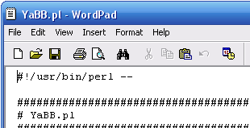

Step 1 - Editing the Path to Perl
Before you upload any files to your server, you first may need to make a few small edits to 'AdminIndex.pl', 'Setup.pl' and 'YaBB.pl,' which are in the 'cgi-bin/yabb2' folder. Also 'ModuleChecker.pl' in the 'cgi-bin/yabb2/Admin' folder and 'SpellChecker.pl' in the 'cgi-bin/yabb2/Sources' folder of the package you downloaded. When you've found them, open each in a text editor such as Notepad or UltraEdit. Make note of the very first line in each of these files, which is called a shebang or "path to Perl." Depending on your server, this line may need to be changed. This line must -always- start with #!.
Generally, the default is correct on most Linux/*nix systems ( On a Linux host, the path is usually #!/usr/bin/perl), but Perl can be installed in different locations. For example on a Windows or WinNT host, your Perl path should probably be set to #!C:/Perl/Bin/Perl.exe. Check with your host or check your server for the proper path and change the file path accordingly in each of the files, noted above.